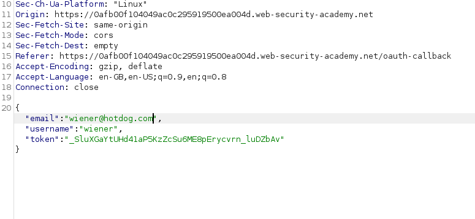
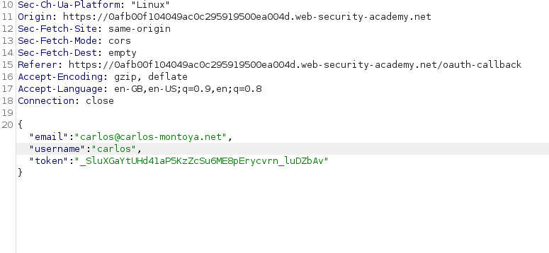

Authentication bypass via OAuth implicit flow
so this is a basic lab where the main goal is to login into the other user account with email:
carlos@carlos-montoya.net
and as common sense says : username will be carlos ,
we also are give our credentials for session and authorization code generation and login
now you get the crux of the problem , due to the flawed validation system we can use our own credentials from the site and use it to login our account but that's not all , duing the OAUTH steps :

we'll go as the flow goes till the step 5 where the access token is granted on our name and credentials , now we need to stay alert after step 5
as during step 7 when client get the credentials , and those are being given what we'll do is we'll intercept the request and provide the creds we were told to hack and paste them in the section:
before : AFTER:
 
why does this happen:
Due to the dangers introduced by sending access tokens via the browser, the implicit grant type is mainly recommended for single-page applications. However, it is also often used in classic client-server web applications because of its relative simplicity.
In this flow, the access token is sent from the OAuth service to the client application via the user's browser as a URL fragment. The client application then accesses the token using JavaScript. The trouble is, if the application wants to maintain the session after the user closes the page, it needs to store the current user data (normally a user ID and the access token) somewhere.
To solve this problem, the client application will often submit this data to the server in a POST request and then assign the user a session cookie, effectively logging them in. This request is roughly equivalent to the form submission request that might be sent as part of a classic, password-based login. However, in this scenario, the server does not have any secrets or passwords to compare with the submitted data, which means that it is implicitly trusted.
Attack:
In the implicit flow, this POST request is exposed to attackers via their browser. As a result, this behavior can lead to a serious vulnerability if the client application doesn't properly check that the access token matches the other data in the request. In this case, an attacker can simply change the parameters sent to the server to impersonate any user.